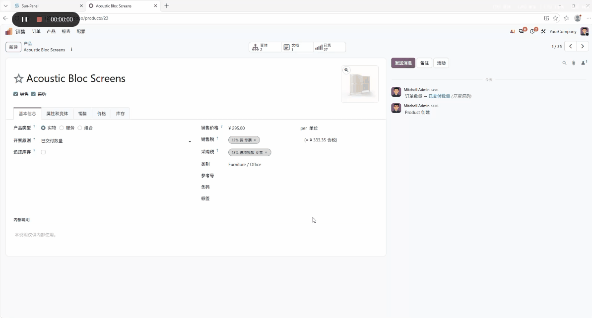
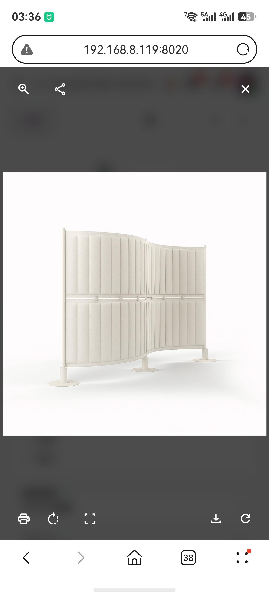
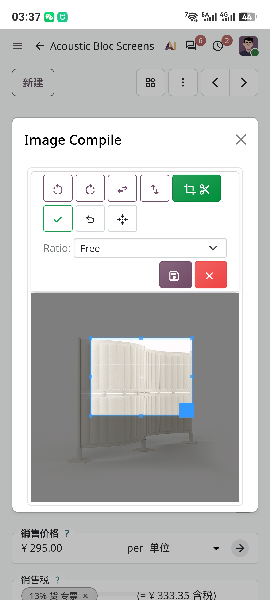

Powerful OWL-based custom image field widget for , built on.
Add image crop, rotate, flip and fullscreen preview to your binary / many2one image fields.
Product photos, contact avatars, document photos, signature uploads, Studio custom image fields, and more.
产品图片、联系人头像、证件照片、签名上传、Studio自定义图片字段等场景。
widget="image_cropper"<odoo>
<data>
<record id="act_product_view_inherit" model="ir.ui.view">
<field name="name">product.template.inherit</field>
<field name="model">product.template</field>
<field name="inherit_id" ref="product.product_template_only_form_view"/>
<field name="arch" type="xml">
<xpath expr="/form[@name='Product Template']//field[@name='image_1920']" position="attributes">
<attribute name="widget">image_cropper</attribute>
</xpath>
</field>
</record>
</data>
</odoo>
<odoo>
<data>
<record id="act_report_view_inherit" model="ir.ui.view">
<field name="name">product.template.inherit</field>
<field name="model">product.template</field>
<field name="inherit_id" ref="product.product_template_only_form_view"/>
<field name="arch" type="xml">
<xpath expr="/form[@name='Product Template']//field[@name='image_1920']" position="attributes">
<attribute name="widget">image_cropper</attribute>
<attribute name="options">{'preview_image': 'image_128', 'size': [120, 120], 'zoom': True,
'img_class': 'border rounded h-100 object-fit-contain',
'convert_to_webp': True, 'enable_fabric_edit': True}
</attribute>
</xpath>
</field>
</record>
</data>
</odoo>